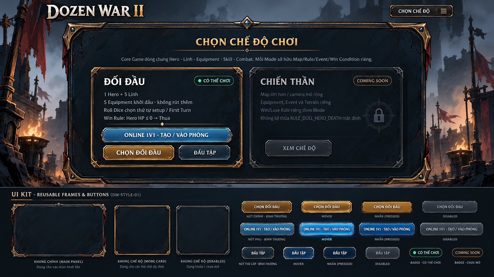
DOZEN WAR II · DW-STYLE-01
Bộ thiết kế UI DozenWar
14 BẢNG CONCEPT · DESKTOP & MOBILEPhong cách kim loại vàng cũ, đá tối và nét vẽ góc cạnh xuyên suốt từ chọn trận đến kết quả. Gồm mẫu Chọn chế độ, 4 bảng ingame và 9 bảng bổ sung. Bản mẫu đang chờ duyệt; chưa thay UI trong game.
Các hình là concept tổng hợp, chưa phải các asset đã tách riêng. Nội dung minh họa không thay thế dữ liệu và luật chơi hiện tại; bản chưa xác nhận vẫn là bản thử.

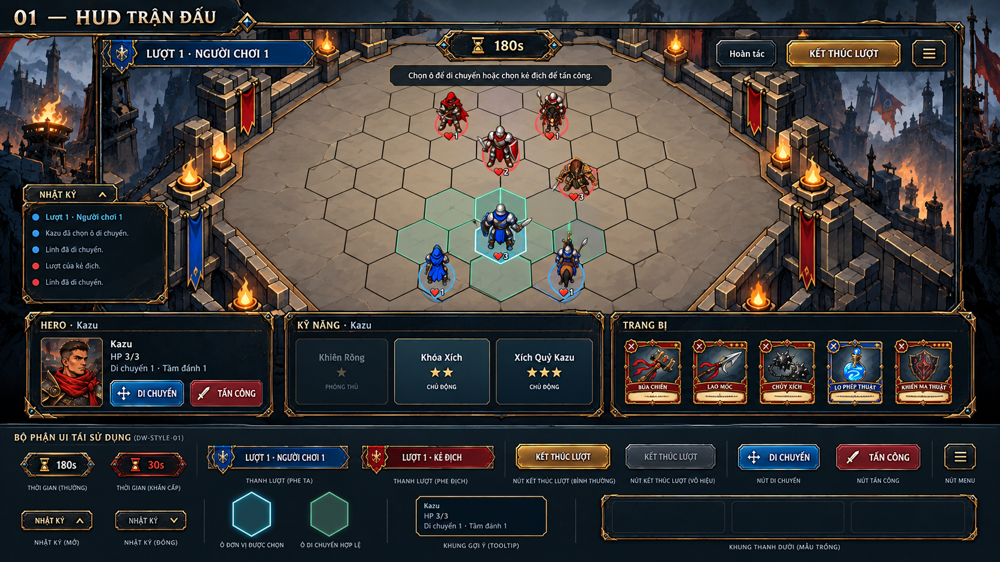

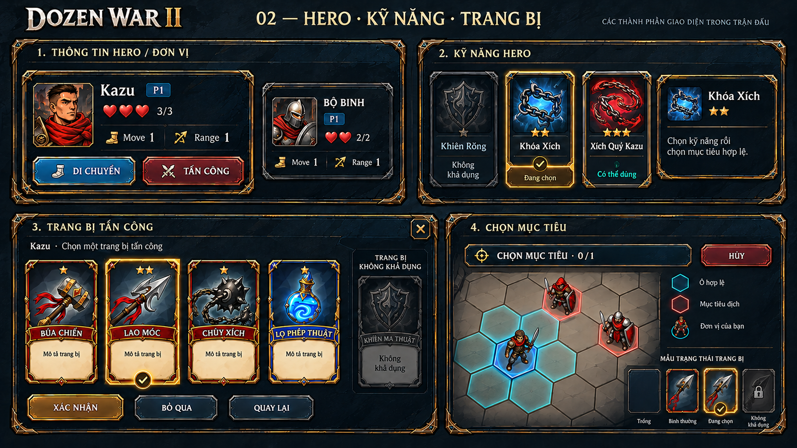

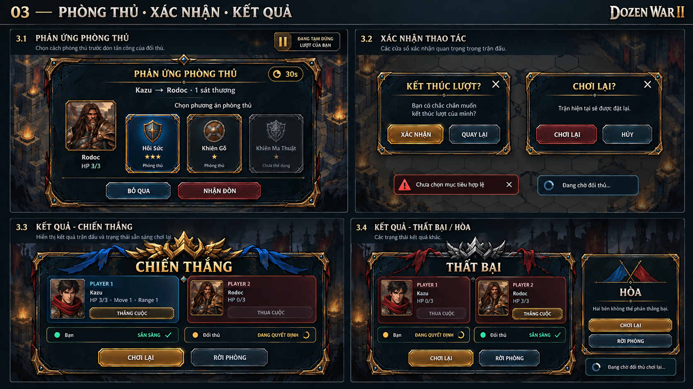

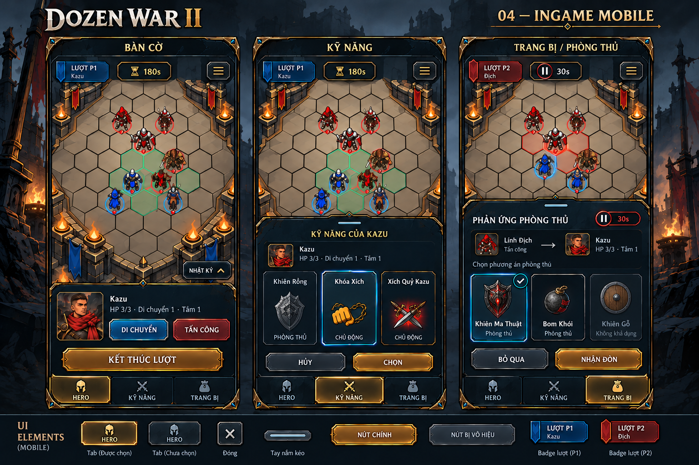

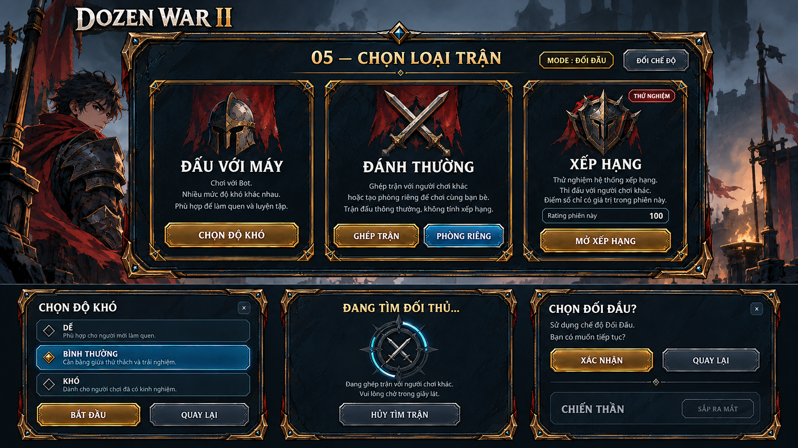
05 · Chọn loại trận
Đấu với máy, chọn độ khó, đánh thường, xếp hạng thử nghiệm, tìm trận và xác nhận chế độ.

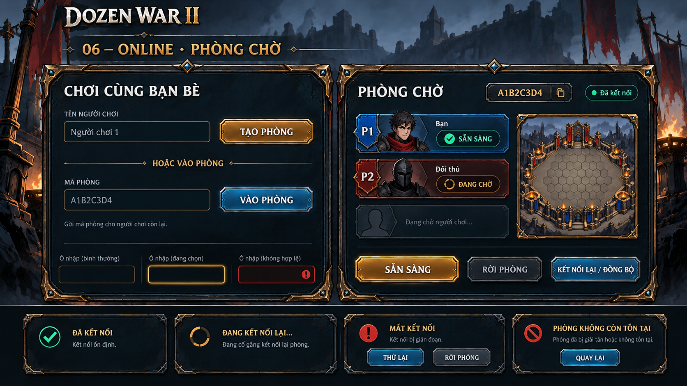
06 · Online · Phòng chờ
Tạo/vào phòng, tên người chơi, mã phòng, hai vị trí người chơi, sẵn sàng và trạng thái kết nối.

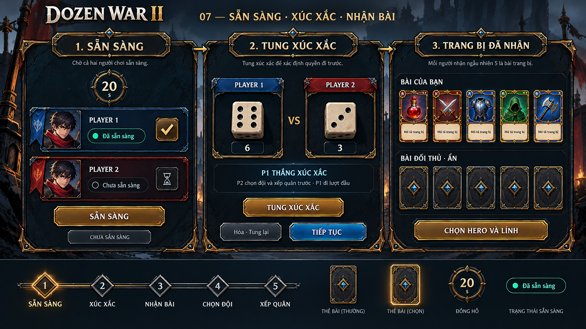
07 · Sẵn sàng · Xúc xắc · Nhận bài
Xác nhận sẵn sàng, tung xúc xắc, kết quả, nhận năm bài và hiển thị bài úp của đối thủ.

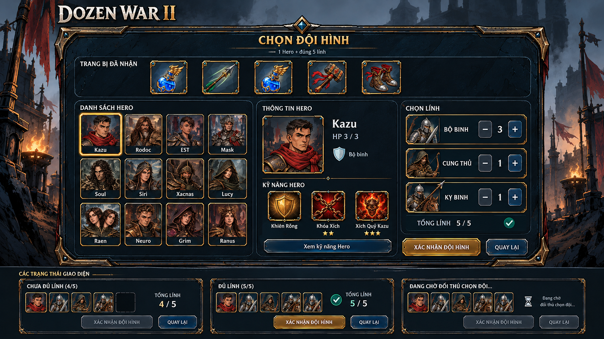
08 · Chọn Hero & đội hình
Khung cho 12 Hero, thông tin Hero, bộ đếm quân từng chủng, trạng thái chưa đủ/đủ năm lính và chờ đối thủ.

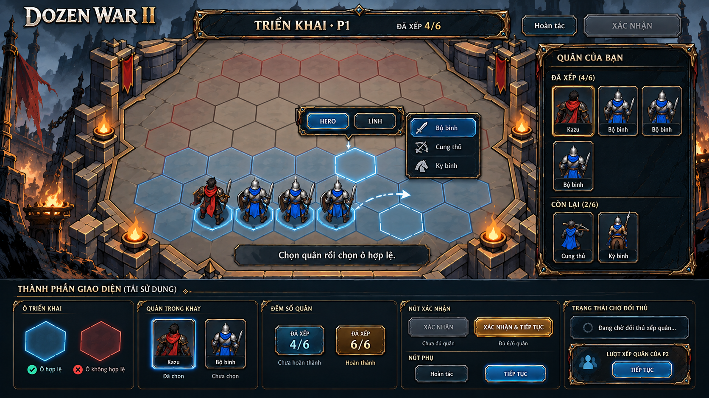
09 · Triển khai đội hình
Vùng đặt quân, danh sách quân đã xếp/còn lại, chọn chủng lính, hoàn tác và xác nhận đủ sáu đơn vị.

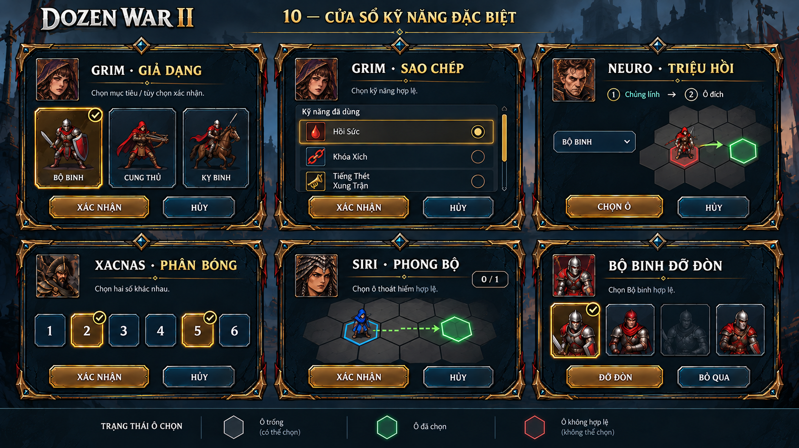
10 · Kỹ năng đặc biệt
Giả Dạng, Sao Chép, Triệu Hồi, Phân Bóng, Phong Bộ và chọn Bộ binh đỡ đòn.

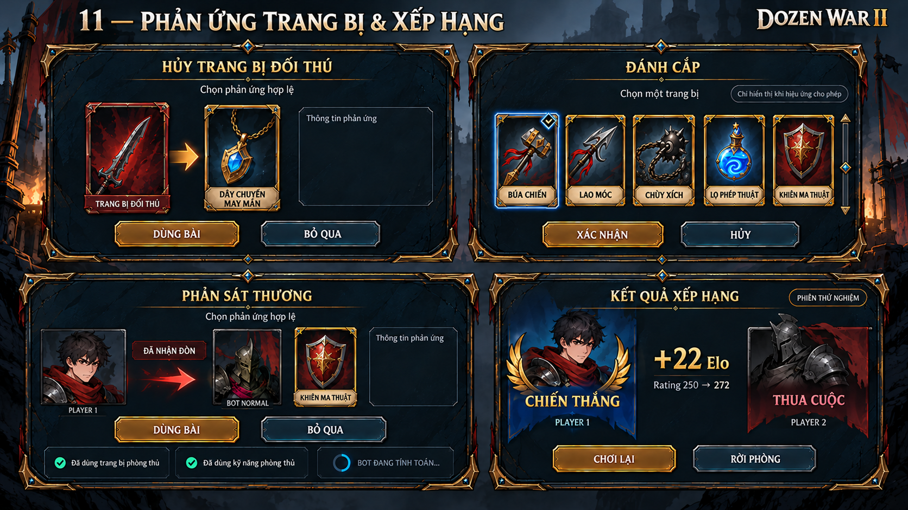
11 · Phản ứng trang bị & xếp hạng
Hủy trang bị, Đánh Cắp, phản sát thương, thông báo phản ứng và kết quả Elo của phiên thử nghiệm.

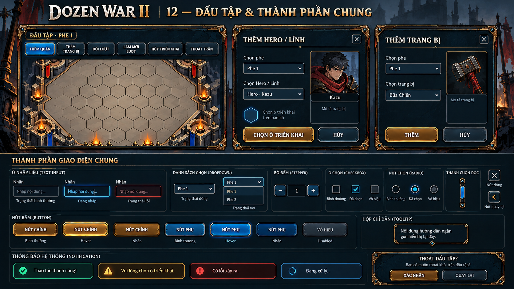
12 · Đấu tập & điều khiển chung
Thanh công cụ Đấu tập, thêm Hero/lính, thêm trang bị, ô nhập, danh sách chọn, bộ đếm, nút và thông báo.

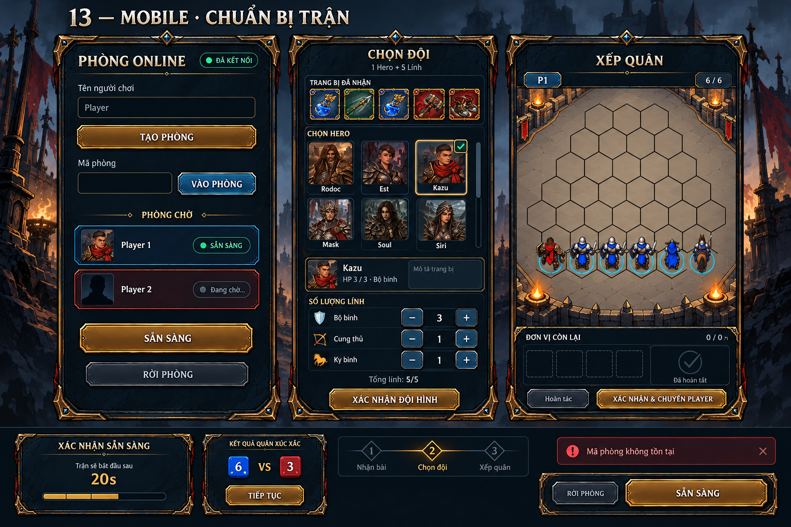
13 · Mobile · Chuẩn bị trận
Ba bố cục màn dọc: phòng online, chọn đội và xếp quân; kèm mẫu sẵn sàng, xúc xắc và thanh hành động.